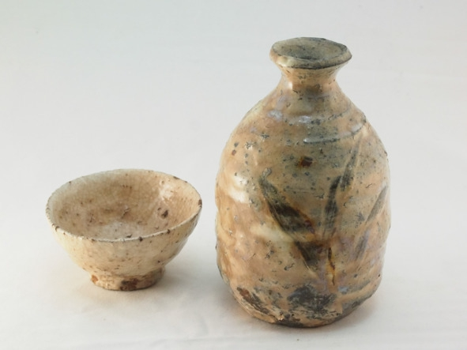

О культуре пития .. Саке – японская рисовая брага...


Саке – традиционный японский спиртной напиток крепостью 14—16% об. зеленоватого или желто-янтарного цвета с горьковатым привкусом, получаемый путем сбраживания крупнозернистого риса с помощью особого вида дрожжевого грибка «кодзи». Во вкусе саке выделяются нотки яблок, бананов, винограда, сыра, свежих грибов и соевого соуса. На родине это спиртное называют «нихонсю», так как в японском языке слово «саке» обозначает любой алкогольный напиток, но из-за неточности перевода именно этот термин вошел в международный обиход.
Обыватели считают саке рисовой водкой, но это в корне неверно, поскольку напиток не проходит дистилляции или ректификации и в нашем понимании ближе всего к отфильтрованной рисовой браге. Еще встречается название «рисовое вино», которое можно считать правильным лишь отчасти, так как в виноделии используется фруктовое и ягодное сырье. По органолептическим свойствам саке не имеет аналогов.
Саке появилось около 2 тыс. лет назад при дворе японских императоров и в синтоистских храмах. В Средние века рецепт переняли деревенские общины. Древняя технология производства отличалась от современной: сначала рис пережевывали во рту и сплевывали в емкости для брожения, это был длительный и трудоемкий процесс. Позднее для запуска брожения японцы научились использовать вид плесневого грибка Aspergillus oryzae – кодзи. В XVII веке саке начали экспортировать в другие азиатские страны.
Технология производства саке
Для приготовления саке требуется крупнозернистый рис с высоким содержанием крахмала. Сначала рис шлифуют, чтобы удалить оболочку зерна и зародыш, которые при брожении привносят в саке неприятный аромат и привкус. При прочих равных условиях чем выше степень шлифовки риса, тем лучше качество саке, допустимый диапазон шлифовки – 30—70%. Это значит, что для дорогих сортов саке обтачивают до 70% зерна, используя в производстве только 30% сердцевины зерен.
Отшлифованный рис промывают, замачивают на 2—24 часа (чем выше степень шлифовки, тем меньше времени требуется), затем обрабатывают паром. Рис должен размякнуть, но не перевариться, иначе брожение будет слишком быстрым и саке не успеет вобрать в себя все нотки вкуса.
В пропаренный рис вносят заранее активированные плесневые грибки кодзи, воду и дрожжи. Для успешного брожения нужно расщепить рис в крахмале до простых сахаров. В производстве виски и других зерновых дистиллятов для этого применяется солод – пророщенное зерно, а в саке крахмал до сахаров перерабатывают кодзи. В этом главное отличие саке от других алкогольных напитков на основе зерна.
Рисовое сусло бродит при температуре 15—20 °С (дорогие сорта при 10 °С) 18—40 дней. Чем дольше период брожения, тем выше качество готового напитка. Отбродившее сусло сначала процеживают, получается элитное саке. Затем сусло прессуют, чтобы извлечь из него остатки жидкости, так получают обычные сорта.
Согласно японскому законодательству, саке может называться только напиток, который не содержит осадка, поэтому все виды подвергают фильтрации, иногда для этой цели используется древесный активированный уголь. Также большинство сортов саке пастеризуют, чтобы убить остатки дрожжей, которые могут вызвать повторное брожение в бутылке. Затем саке помещают на 6—12 месяцев в специальные емкости для выдержки. В конечном итоге крепость саке 18—20% об., но перед бутилированием напиток обычно разбавляют до 14—16% об., поскольку японцам не нравится крепкий алкоголь.
Как пить саке
Саке пьют двумя методами: охлажденным или подогретым. Выбор метода зависит от качества и цены напитка. Косвенно качество саке определяется степенью шлифовки риса, для элитных сортов этот показатель должен быть не ниже 50—60%.
Саке премиум-класса подают холодным (5° C) в бокалах для красного вина. Участники застолья подносят наполненный максимум на треть бокал на уровень глаз, затем не чокаясь произносят слово «кампай» – универсальный японский тост, дословно переводящийся как «пьем до дна». Дальше делают глоток. В качестве закуски используются традиционные блюда японской кухни, например суши. К элитному саке нельзя подавать острые блюда, поскольку они искажают вкус.
Саке среднего и бюджетного ценового сегмента пьют подогретым из керамического кувшина (токкури) и маленьких чашечек (чоко), емкость последних рассчитана на два-три глотка.
Нагревание решает сразу две задачи: позволяет согреться в холод и скрыть недостатки самого напитка. Саке нагревают на водяной бане, оптимальная температура подачи – 20—30°С. Чашку наполняют перед каждым тостом. Неприличным считается наливать саке самому себе, это должен сделать другой участник застолья. Горячее саке закусывают морепродуктами, бутербродами, мясом, овощами и другими блюдами. Выбор еды не такой строгий, как в первом случае.

Чоко и токкури